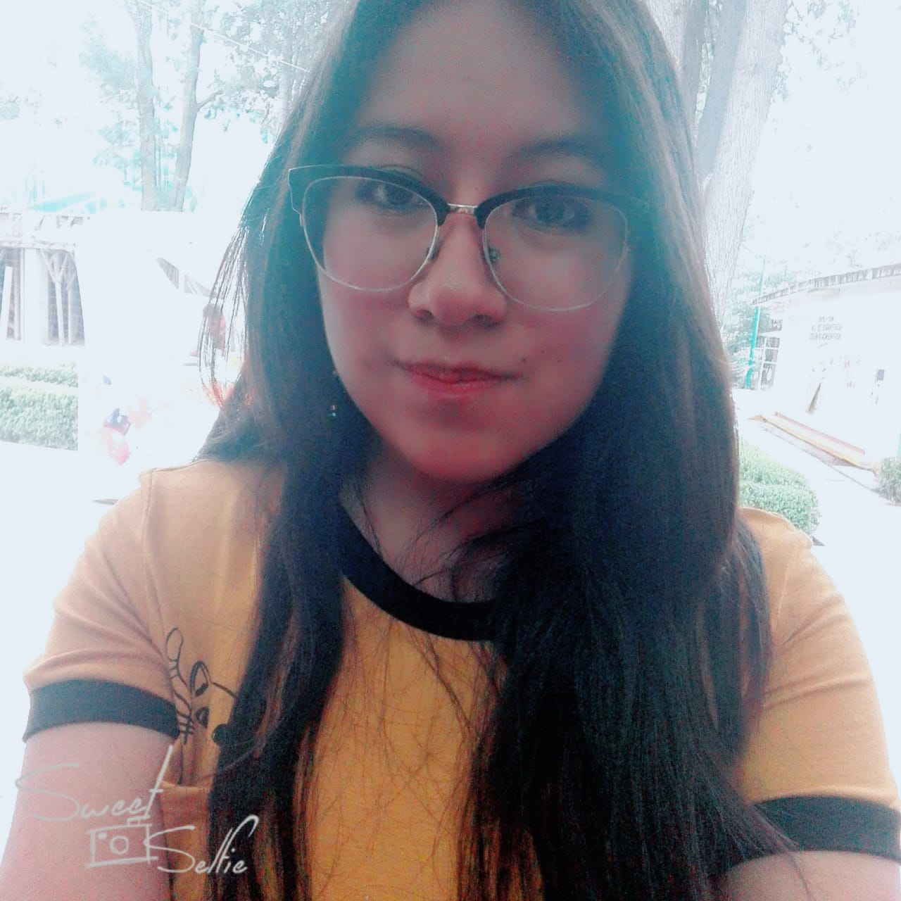

Hola, soy Eliza Mendoza

Soy una persona proactiva, organizada y responsable. Siempre tengo la mejor disposición para aprender cosas nuevas y aceptar nuevos retos. Me encanta conocer diferentes culturas y relacionarme con más personas. Busco una oportunidad donde pueda continuar aprendiendo, y a su vez poner en práctica los conocimientos que he ido adquiriendo durante mi formación profesional.
Desarrollo Web
El desarrollo web me atrae debido a su combinación de creatividad, desafíos técnicos, versatilidad, comunidad y capacidad de generar un impacto positivo en el mundo digital.
Pasatiempos
Los pasatiempos ofrecen una vía para liberar el estrés, desarrollar habilidades, fomentar la creatividad y, a menudo, conectarse con otras personas que comparten intereses similares. Algunas de las actividades que disfruto hacer son:
Estudiante
Estudio la licenciatura en Informática Administrativa, la cual es un campo interdisciplinario que combina aspectos de la informática, la administración y la gestión de sistemas de información. Su principal objetivo es formar profesionales capaces de utilizar la tecnología de la información para mejorar la eficiencia y la toma de decisiones en organizaciones y empresas.

"La frase más peligrosa que jamás se ha inventado es: 'Siempre lo hemos hecho de esta manera'. No aceptes las cosas simplemente porque siempre se han hecho así."
Grace Hopper
Científica de la computación y militar estadounidense

"Creo que es posible tenerlo todo, pero no todo a la vez. Hay momentos y etapas en los que se prioriza el trabajo y otros en los que se prioriza la familia y la vida personal."
Marissa Mayer
Ingeniera en informática y directiva estadounidense

"No te sientes y esperes que alguien te invite a la mesa. Esa no es la forma en que funciona. Debes invitar a ti misma."
Sheryl Sandberg
Economista, autora y directora ejecutiva estadounidense